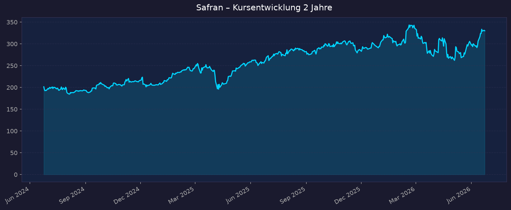
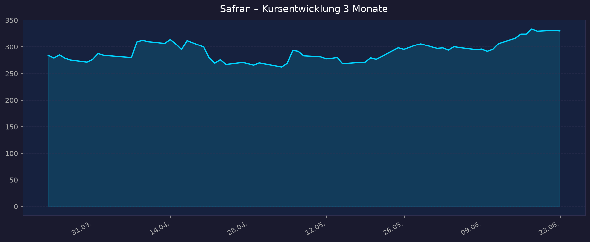

Alle Kurse in EUR (Euronext Paris). Interaktiver Chart: https://www.tradingview.com/symbols/EURONEXT-SAF/
📈 1. Kursentwicklung
Aktueller Kurs: 330,00 EUR | Veränderung heute: −0,4 % (Vortagesschluss 331,20 EUR)
Chart – 2 Jahre

Chart – 3 Monate

| Zeitraum | Kurs Start | Kurs Ende | Veränderung |
|---|---|---|---|
| 2 Jahre | 201,44 EUR | 330,00 EUR | +63,8 % |
| 3 Monate | 284,11 EUR | 330,00 EUR | +16,2 % |
| 52-Wochen-Hoch | — | 350,80 EUR | — |
| 52-Wochen-Tief | — | 262,60 EUR | — |
Die Aktie notiert nahe dem Allzeithoch (52W-Hoch 350,80 EUR), rund 6 % unter dem Hoch. Über zwei Jahre hat sich der Kurs überdurchschnittlich entwickelt; das letzte Quartal zeigt eine deutliche Aufwärtsbewegung (+16 %).
💹 2. KGV-Entwicklung (Kurs-Gewinn-Verhältnis)
Aktuelles KGV (trailing): ca. 19,2 (yfinance) bzw. ca. 16,3–16,5 nach FY2025-Gewinn (Macrotrends/GuruFocus) | Forward-KGV: ca. 26,9
| Zeitraum | KGV | Einordnung |
|---|---|---|
| Aktuell (TTM) | ~16,3–19,2 | Deutlich unter Branchenmedian (~41) |
| Dez 2024 | ~182* | *Verzerrt durch Sondereffekte/niedriges Nettoergebnis 2024 |
| 10-Jahres-Median | ~25,4 | — |
| 10-Jahres-Min/Max | 7,6 / >1000* | *Ausreißer durch Sonderjahre |
* Die historischen KGV-Spitzen sind durch einmalige Belastungen (u. a. Rückstellungen, Hedging-Effekte) im Nettoergebnis verzerrt und nicht repräsentativ für die operative Bewertung. Nach dem starken FY2025-Gewinnsprung (+26 % recurring operating income) ist das trailing-KGV deutlich gesunken.
Bewertung: Auf TTM-Basis (~16–19) handelt Safran mit einem klaren Abschlag zum Aerospace-&-Defense-Branchenmedian (~41). Das Forward-KGV (~27) liegt höher, spiegelt aber die starke Gewinnbasis 2025 und konservative Forward-Schätzungen wider. Im historischen Median (25) erscheint die Aktie auf bereinigter Gewinnbasis fair bis leicht günstig bewertet.
💰 3. Sales Multiple (Kurs-Umsatz-Verhältnis / P/S)
Aktuelles P/S-Verhältnis: ca. 4,4 (Marktkap. ~137 Mrd. EUR / Umsatz FY2025 31,3 Mrd. EUR)
| Zeitraum | P/S Ratio | Einordnung |
|---|---|---|
| Aktuell | ~4,4 | Moderat für Premium-Aerospace |
| Detail-Historie 2J/3M | nicht verfügbar | Macrotrends hinter Paywall (HTTP 402) |
Trend: Bei einem Umsatz von 31,3 Mrd. EUR (FY2025, +15 %) und einer Marktkapitalisierung von rund 137 Mrd. EUR liegt das P/S bei ca. 4,4. Für ein Unternehmen mit ~16–17 % operativer Marge und zweistelligem Umsatzwachstum ist das ein vertretbares Niveau, das jedoch keinen tiefen Bewertungsabschlag mehr bietet. Granulare historische P/S-Werte sind aktuell nicht verfügbar.
📊 4. Handelsvolumen (Trading Volume)
| Zeitraum | Ø Tagesvolumen | Auffälligkeiten |
|---|---|---|
| 10-Tage-Durchschnitt | ~814.000 Aktien | leicht erhöht ggü. 3M-Schnitt |
| 3-Monats-Durchschnitt | ~768.000 Aktien | — |
| 2-Jahres-Durchschnitt | nicht verfügbar | — |
| Volumen-Peak (2J) | nicht verfügbar | typisch um Earnings-Termine |
Volumentrend: Das 10-Tage-Volumen (~814 Tsd.) liegt leicht über dem 3-Monats-Schnitt (~768 Tsd.), was zum jüngsten Kursanstieg (+10 % in zwei Wochen) und dem Annähern an das ATH passt. Insgesamt liquider Standardwert im CAC 40.
🏦 5. Insider Trades (letzte 2 Jahre)
| Datum | Name | Funktion | Kauf/Verkauf | Anzahl Aktien | Wert (EUR) |
|---|---|---|---|---|---|
| nicht verfügbar | — | — | — | — | — |
3-Monats-Überblick: nicht verfügbar (keine US-SEC-Form-4-Pflicht; AMF-Meldungen nicht granular abrufbar) 2-Jahres-Überblick: Als französische Gesellschaft meldet Safran Direktoren-/Insider-Transaktionen an die AMF (Autorité des Marchés Financiers), nicht an die SEC. Über die Standard-US-Quellen (OpenInsider/Finviz) sind keine detaillierten Insider-Trades abrufbar. Dokumentiert ist lediglich das laufende Aktienrückkaufprogramm des Unternehmens (z. B. Meldung "Statement of transactions in own shares" 4.–8. Mai 2026), was ein moderat positives Eigensignal darstellt.
Quelle: AMF / Safran IR (Detaildaten best effort – nicht verfügbar)
🩳 6. Short-Positionen
Aktuelle Short Quote: nicht verfügbar (best effort)
| Zeitraum | Short Interest | Veränderung |
|---|---|---|
| Aktuell | nicht verfügbar | — |
Einschätzung: Für CAC-40-Standardwerte wie Safran werden Netto-Leerverkaufspositionen ab 0,5 % über die AMF gemeldet; öffentlich aggregierte Short-Quoten waren über die Standardquellen (Finviz deckt primär US-Werte ab) nicht abrufbar. Bei einem Large-Cap dieser Liquidität und positivem Momentum ist von einer niedrigen Short-Quote auszugehen, eine konkrete Zahl ist jedoch nicht verfügbar.
🗞️ 7. Aktuelle Nachrichten
| Datum | Quelle | Nachricht | Relevanz |
|---|---|---|---|
| Juni 2026 | Safran/Eurosatory | Safran Electronics & Defense investiert ~50 Mio. EUR in Deutschland, startet Counter-Drohnen-Lösungen | Mittel |
| Mai 2026 | Safran | Strategische Partnerschaft mit Baykar (unbemannte Systeme, Navigation, Smart Weapons) | Mittel |
| 23.04.2026 | Safran | Q1 2026: Umsatz 8,624 Mrd. EUR, +18,8 % (+23,0 % organisch); LEAP +63 % | Hoch |
| 23.04.2026 | Investing.com | Aktie steigt nach Q1-Umsatz über Erwartung; FY2026-Guidance bestätigt | Hoch |
| 13.02.2026 | Safran | FY2025: Rekordergebnis, 2028-Ambition angehoben auf 7–7,5 Mrd. EUR ROI (zuvor 6–6,5) | Hoch |
| 13.02.2026 | Leeham News | "Outstanding 2025"; Vorbereitung auf Airbus A320neo Rate 75/Monat (2027) | Hoch |
| 24.10.2025 | Safran | Q3 2025: +18,3 % Umsatz, FY-Guidance angehoben | Hoch |
| Juni 2026 | Deutsche Bank | Buy, Kursziel 325 EUR | Mittel |
| Juni 2026 | Goldman Sachs | Initiierung Buy, Kursziel 340 EUR (Propulsion/Aftermarket-Stärke) | Mittel |
| 17.06.2026 | TipRanks | Ø-Kursziel ~344 EUR (Hoch 380 / Tief 315) | Mittel |
Sentiment: Überwiegend positiv — die Nachrichtenlage wird von starken operativen Zahlen (LEAP-Hochlauf, boomender Aftermarket), angehobenen Mittelfrist-Zielen und konsistenten Analysten-Kaufempfehlungen dominiert. Defensiv-Geschäft (Drohnen, Baykar) liefert zusätzliche Wachstumsfantasie.
📋 8. Letzte Berichtsperioden (Quartale & Halbjahr)
Hinweis: Safran berichtet Q1/Q3 nur als reine Umsatzzahlen, Ergebnis/Marge/FCF nur zum Halbjahr (H1) und Gesamtjahr (FY). Daher H1 2025, FY2025 und Q1 2026.
FY 2025 (veröffentlicht 13.02.2026)
| Kennzahl | Ist | Vergleich | Abweichung |
|---|---|---|---|
| Umsatz | 31.329 Mio. EUR | +14,7 % (+14,8 % organisch) | Rekord |
| Recurring Operating Income | 5.197 Mio. EUR | +26 % | 16,6 % Marge (+150 Bp) |
| Free Cashflow | 3.921 Mio. EUR | +23 % | ~75 % EBIT-Cash-Conversion |
| LEAP-Auslieferungen | 1.802 Stück | +28 % | Rekord |
Guidance/Ausblick: 2028-Ambition angehoben auf 7,0–7,5 Mrd. EUR ROI (zuvor 6,0–6,5). Investitionen für Airbus-Rate-75-Hochlauf (2027) beschlossen. Kursreaktion: positiv aufgenommen ("outstanding 2025").
Q1 2026 (veröffentlicht 23.04.2026)
| Kennzahl | Ist | Vergleich | Abweichung |
|---|---|---|---|
| Umsatz | 8.624 Mio. EUR | +18,8 % berichtet (+23,0 % organisch) | über Erwartung |
| Propulsion | +33,1 % | Aftermarket +32,1 %, OE +35,0 % | — |
| LEAP-Auslieferungen | 520 Stück | +63 % (vs. 319 Q1 2025) | 3. Quartal in Folge >500 |
| Ersatzteile/Services (zivil) | +29 % / +43 % | — | — |
Guidance: FY2026 bestätigt — Umsatzwachstum low-to-mid-teens, ROI 6,1–6,2 Mrd. EUR; ~+15 % LEAP-Lieferungen, mid-teens Spare-Parts (USD), ~+20 % Services (USD). Kursreaktion: Aktie stieg nach Veröffentlichung (Umsatz über Erwartung, Guidance gehalten).
H1 2025 (veröffentlicht 31.07.2025)
| Kennzahl | Ist | Vergleich | Abweichung |
|---|---|---|---|
| Umsatz | 14.865 Mio. EUR | +12,6 % | — |
| Recurring Operating Income | 2.510 Mio. EUR | +27,2 % | 17,0 % Marge (+1,9 Pp) |
| Nettogewinn / EPS | 1.432 Mio. EUR / 3,80 EUR | — | — |
| Free Cashflow | 1.834 Mio. EUR | — | — |
Guidance (Stand H1): Umsatz low teens, ROI 5,0–5,1 Mrd. EUR, FCF 3,4–3,6 Mrd. EUR (vor Collins-Beitrag/Zöllen) — im Jahresverlauf mehrfach angehoben. Kursreaktion: positiv (starker Aftermarket, LEAP-Hochlauf, Sitz-Geschäft).
Zur Einordnung Q3 2025 (24.10.2025): Umsatz 7.852 Mio. EUR, +18,3 % (+18,5 % organisch); 9M-Umsatz 22.621 Mio. EUR (+14,9 %); FY-Guidance angehoben.
🌍 9. Marktkontext & Wettbewerb
Markt / Branche: Aerospace – Triebwerke & Engine-MRO/Aftermarket. Globaler Triebwerksmarkt ~170 Mrd. USD (2026) → ~248 Mrd. USD (2034), CAGR ~4,8 %. Engine-MRO-Segment ~49 Mrd. USD (2026) → ~71 Mrd. USD (2034), CAGR ~4,7 %. Gesamter Aircraft-MRO-Markt ~96 Mrd. USD (2026).
| Wettbewerber | Stärke | Schwäche |
|---|---|---|
| GE Aerospace | Größter Triebwerkshersteller; CFM-JV-Partner von Safran (LEAP/CFM56); riesige installierte Basis | Konzentration auf Großtriebwerke; teils zyklisch |
| RTX / Pratt & Whitney | GTF-Geared-Turbofan, breite Aerospace-Plattform | GTF-Qualitätsprobleme/Rückrufe belasteten zuletzt |
| MTU Aero Engines | Profitables MRO, Risk-&-Revenue-Sharing-Partner | Kleiner; keine eigene große Plattform |
| Rolls-Royce | Widebody-Triebwerke (Trent) | Schwächer im margenstarken Narrowbody-Aftermarket |
Branchentrends:
- Aftermarket-Boom: Rekord-Passagieraufkommen treibt Shop-Visits und Ersatzteilnachfrage; margenstark und wiederkehrend ("Geldmaschine").
- LEAP-Hochlauf & installierte Basis: Wachsende LEAP-Flotte (1.802 Auslieferungen 2025) wird zur künftigen Aftermarket-Rente; CFM56 liefert weiterhin hohe Workscope-Margen.
- Airbus-Rate-75 (2027): Produktionshochlauf der A320neo-Familie als struktureller Treiber.
Marktposition: Führend – über die CFM-International-JV (50/50 mit GE Aerospace) dominiert Safran das margenträchtigste Segment der Narrowbody-Triebwerke. Vier Hersteller liefern 99 % aller Verkehrs-/Militärtriebwerke; CFM ist hier der Volumenführer. Technische Exklusivität sichert hochmargige Langzeit-Serviceverträge.
Risiken aus dem Marktumfeld:
- Lieferketten: Hochlauf bleibt anfällig für Engpässe (Gussteile, Arbeitskräfte) — bremste zuletzt OEM-Auslieferungen.
- Zyklik: Aerospace ist konjunktur- und nachfrageabhängig; ein Luftverkehrseinbruch träfe Aftermarket und Neubau.
- FX/Zölle: USD-Exposure (Spare Parts in USD) und Handels-/Zollthemen als Belastungsfaktoren (in H1-Guidance explizit herausgerechnet).
- Bewertung nahe ATH: Wenig Sicherheitsmarge bei Enttäuschungen.
📝 Gesamteinschätzung
Stärken:
- Strukturell wachsender, margenstarker Aftermarket ("Geldmaschine") mit wiederkehrenden Umsätzen.
- Rekord-LEAP-Hochlauf (+63 % in Q1 2026) baut die installierte Basis und damit künftige Service-Renten aus.
- Beeindruckende Profitabilität & Cash-Generierung: 16,6 % ROI-Marge, FCF 3,9 Mrd. EUR (+23 %).
- Angehobene 2028-Ziele (7–7,5 Mrd. EUR ROI) signalisieren Management-Zuversicht.
- Quasi-Duopol-Position im Narrowbody-Triebwerk über CFM-JV mit GE Aerospace.
Risiken:
- Bewertung nahe Allzeithoch; Forward-KGV ~27 lässt wenig Spielraum für Enttäuschungen.
- Lieferketten-Engpässe könnten den Hochlauf bremsen.
- Zyklisches Geschäft – abhängig von Luftverkehr und OEM-Raten (Airbus/Boeing).
- FX-/Zoll-Exposure (USD-Ersatzteilgeschäft).
- Insider- und Short-Daten nicht transparent über Standardquellen verfügbar.
Fazit: Safran ist ein operativ erstklassig laufendes Aerospace-Schwergewicht mit einem strukturell wachsenden, margenstarken Aftermarket und einem rekordverdächtigen LEAP-Hochlauf, der die künftige Service-Basis ausbaut. Die Bewertung ist auf bereinigter Gewinnbasis (TTM-KGV ~16–19) nicht überzogen, der Kurs notiert jedoch nahe dem Allzeithoch, sodass viel Positives eingepreist scheint. Qualität und Momentum stehen einem begrenzten kurzfristigen Bewertungspuffer und der typischen Zyklik/Lieferketten-Sensitivität der Branche gegenüber.
🎯 Ranking-Einordnung
Bewertung nach 5 Kriterien (Punkte 1–10)
| Kriterium | Gewicht | Punkte (1–10) | Begründung |
|---|---|---|---|
| Wachstum | 25 % | 9 | +23 % organisch (Q1 2026), LEAP +63 %, Aftermarket-Boom, Rate-75-Hochlauf |
| Profitabilität / Cash | 25 % | 9 | 16,6 % ROI-Marge, FCF 3,9 Mrd. EUR (+23 %), ~75 % Cash-Conversion |
| Bewertung | 20 % | 6 | TTM-KGV moderat (~16–19), aber Forward ~27 und Kurs nahe ATH, P/S 4,4 |
| Marktposition / Burggraben | 15 % | 9 | Quasi-Duopol via CFM-JV, technische Exklusivität, wiederkehrender Aftermarket |
| Risiko / Stabilität | 15 % | 6 | Zyklik, Lieferketten, FX/Zoll; solide Bilanz & Auftragsbestand mildern |
Gewichteter Gesamt-Score: 0,25·9 + 0,25·9 + 0,20·6 + 0,15·9 + 0,15·6 = 2,25 + 2,25 + 1,20 + 1,35 + 0,90 = 7,95 / 10
Szenarien 5 Jahre (Horizont ~2031)
Basis: aktueller Kurs 330,00 EUR.
| Szenario | Annahmen | Kursziel 2031 | Potenzial |
|---|---|---|---|
| Bär | Luftverkehrseinbruch/Zyklusabschwung, Lieferketten-/Margendruck, Multiple-Kontraktion | ~255 EUR | −23 % |
| Base | Planmäßiger LEAP-/Aftermarket-Hochlauf, ROI Richtung 7–7,5 Mrd. EUR (2028), stabiles Multiple | ~520 EUR | +58 % |
| Bull | Rate-75 voll erreicht, überdurchschnittliche Aftermarket-Margen, Defense-Beschleunigung, Re-Rating | ~660 EUR | +100 % |
5-Jahres-Potenzial-Spanne: ca. −23 % bis +100 % (Bär–Bull).
Datenquellen: yfinance (Yahoo Finance) · Safran IR/Pressemitteilungen · Investing.com · Leeham News · Macrotrends · GuruFocus · TipRanks · market.us / Fortune Business Insights (Marktgrößen) · AMF (Insider/Short – nicht verfügbar) Stand: 2026-06-23 · Kurse in EUR (Euronext Paris)
Disclaimer: Keine Anlageberatung. Diese Auswertung dient ausschließlich der Information auf Basis öffentlich verfügbarer Daten und kann Fehler oder veraltete Angaben enthalten. Investitionsentscheidungen erfolgen eigenverantwortlich.
🔗 Verwandt: 00_Momentum-Aktien USA-EU-Asien – 5-Jahres-Shortlist 2026-06-23